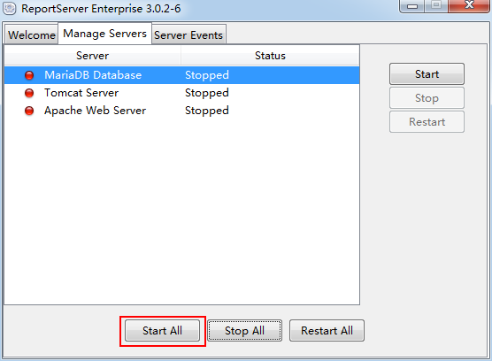

启动
打开软件

启动服务


启动网址
点击软件的 Go to Application 按钮 或者 在浏览器中打开localhost地址


登录
管理员账号密码为： admin 123456
绑定数据源
打开管理 - 数据源
插入关系数据库
填写相关信息，点击 申请 按钮确定，并通过 测试连测试是否成功链接数据库
新建报表
在管理模块中打开 报表管理器
在报表管理器中插入一个动态列表
填写相关信息，并绑定数据源，根据需要填写数据库查询h4>
打开/导入报表
可以直接通过报表管理器双击相关报表来打开
也可以在 团队空间 模块；选择所在团队，点击 导入报告h4>钮，选择要导入的报告；选中报告，右键选择导入方式（新建的报告只有作为参照导入）
报表操作
选择列
选择需要的字段
填写别名
编辑筛选器
点击 编辑筛选器 按钮，或者右键需要筛选的列，或者双击该列